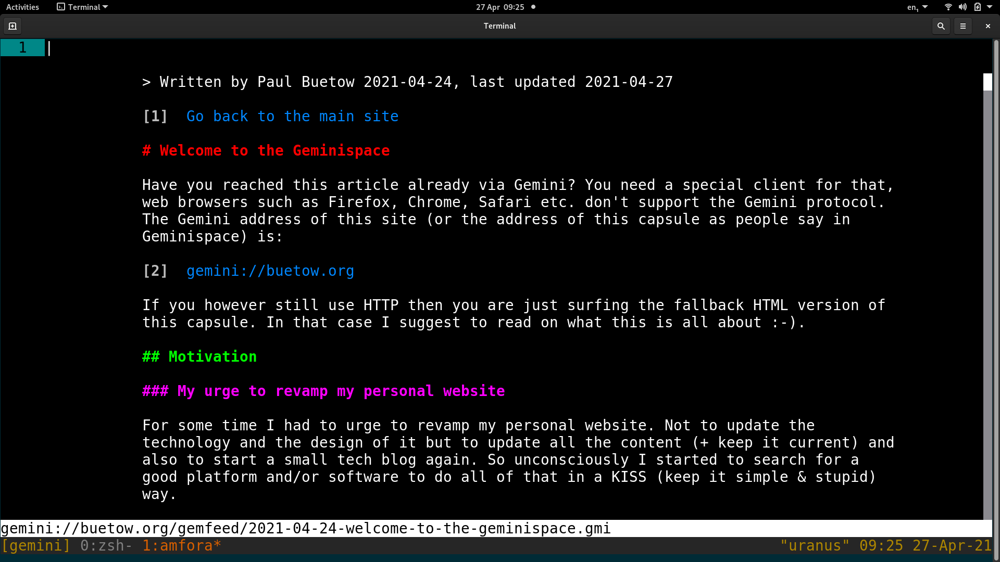

Written by Paul Buetow 2021-04-24, last updated 2021-04-30, ASCII Art by Andy Hood
Have you reached this article already via Gemini? You need a special client for that, web browsers such as Firefox, Chrome, Safari etc. don't support the Gemini protocol. The Gemini address of this site (or the address of this capsule as people say in Geminispace) is:
gemini://buetow.orgIf you however still use HTTP then you are just surfing the fallback HTML version of this capsule. In that case I suggest reading on what this is all about :-).
/\
/ \
| |
|NASA|
| |
| |
| |
' `
|Gemini|
| |
|______|
'-`'-` .
/ . \'\ . .'
''( .'\.' ' .;'
'.;.;' ;'.;' ..;;' AsH
For some time I had to urge to revamp my personal website. Not to update the technology and the design of it but to update all the content (+ keep it current) and also to start a small tech blog again. So unconsciously I started to search for a good platform and/or software to do all of that in a KISS (keep it simple & stupid) way.
Earlier this year (2021) I noticed that my 6 year old but still great Laptop started to become hot and slowed down while surfing the web. Also, the Laptop's fan became quite noisy. This is all due to the additional bloat such as JavaScript, excessive use of CSS, tracking cookies+pixels, ads and so on there was on the website.
All what I wanted was to read an interesting article but after a big advertising pop-up banner appeared and made everything worse I gave up and closed the browser tab.
Around the same time I discovered a relatively new more lightweight protocol named Gemini which does not support all these CPU intensive features like HTML, JavaScript and CSS do. Also, tracking and ads is not supported by the Gemini protocol.
The "downside" is that due to the limited capabilities of the Gemini protocol all sites look very old and spartan. But that is not really a downside, that is in fact a design choice people made. It is up to the client software how your capsule looks. For example, you could use a graphical client with nice font renderings and colors to improve the appearance. Or you could just use a very minimalistic command line black-and-white Gemini client. It's your (the user's) choice.
Screenshot Amfora Gemini terminal client surfing this site:Why is there a need for a new protocol? As the modern web is a superset of Gemini, can't we just use simple HTML 1.0? That's a good and valid question. It is not a technical problem but a human problem. We tend to abuse the features once they are available. You can be sure that things stay simple and efficient as long as you are using the Gemini protocol. On the other hand you can't force every website in the modern web to only create plain and simple looking HTML pages.
As it is very easy to set up and maintain your own Gemini capsule (Gemini server + content composed via the Gemtext markup language) I decided to create my own. What I really like about Gemini is that I can just use my favorite text editor and get typing. I don't need to worry about the style and design of the presence and I also don't have to test anything in ten different web browsers. I can only focus on the content! As a matter of fact, I am using the Vim editor + it's spellchecker + auto word completion functionality to write this.
Check out one of the following links for more information about Gemini. For example, you will find a FAQ which explains why the protocol is named "Gemini". Many Gemini capsules are dual hosted via Gemini and HTTP(S), so that people new to Gemini can sneak peek the content with a normal web browser. As a matter of fact, some people go as far as tri-hosting all their content via HTTP(S), Gemini and Gopher.
gemini://gemini.circumlunar.spaceE-Mail me your thoughts at comments@mx.buetow.org!
Go back to the main site